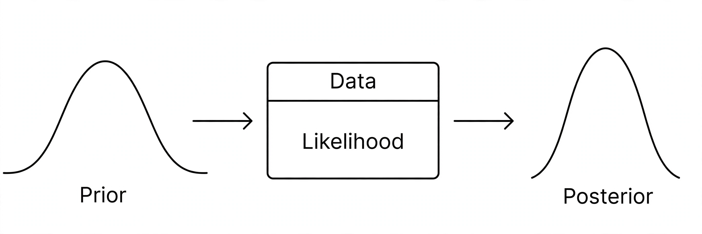

Bayesian statistics

[Image: Diagram of Bayesian updating: prior belief plus data producing a posterior, which becomes the next prior]
Bayesian statistics is the branch of statistics that applies the Bayesian interpretation of probability: unknown quantities are treated as random variables with probability distributions, and data update prior beliefs into posterior conclusions via Bayes' theorem.
Once marginal in the mid-20th century, Bayesian methods expanded rapidly from the 1990s as Markov chain Monte Carlo computation (software such as BUGS, then Stan) made previously intractable models practical. They are now used across medicine, ecology, machine learning and the social sciences.
Concepts
Key notions include the prior and posterior distributions, credible intervals (the Bayesian analogue of confidence intervals), Bayes factors for comparing hypotheses, and hierarchical models that pool information across groups.
Debate with the frequentist school concerns the status of priors and the meaning of probability; in practice many analysts use both toolkits.